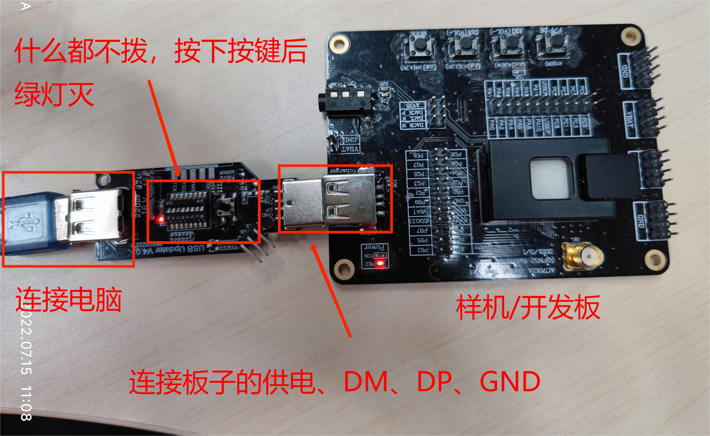
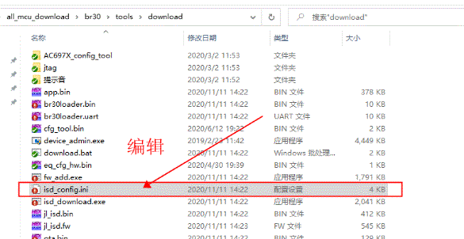
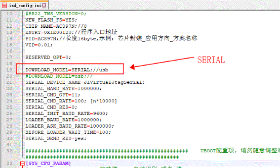

6.1. Upgrading and Downloading
6.1.1. Upgrade procedure
In most cases, when you need to download a program to a development board or device, you use the standard upgrade method. A few chips (such as AD15) use the serial upgrade method.
6.1.1.1. Standard upgrade
1. Set the DIP switches of the Forced Upgrade Tool
Enter upgrade mode with one of the DIP switch settings in the table below
Lower four DIP switches |
LED status |
Button |
Description |
|---|---|---|---|
None on |
Red LED steady on, green LED flashing |
Button press required |
Because pressing the button actually cuts the power output once for more than 250ms to reset the chip, and sends a handshake signal once. |
Switch 1 on |
Red LED steady on, green LED steady on |
No button press required |
Because the tool periodically cuts the power output to reset the chip and periodically sends handshake signals. |
Switch 2 on |
Red LED steady on, green LED flashing |
Button press required |
Because pressing the button actually cuts the power output once for more than 250ms to reset the chip, and sends a handshake signal once. |
Switch 3 on |
Red LED steady on, green LED steady on |
No button press required, but a quick plug-in or a chip wake-up is needed |
The tool keeps sending handshake signals. The purpose of the quick plug-in is to give the chip a power-on reset; a chip wake-up is also a form of reset, so the handshake can succeed that way too. |
Note
Only one of these switches can be turned on at a time, and the Forced Upgrade Tool must be reconnected to the computer
2. Connect the chip to the Forced Upgrade Tool
Connect the female USB connector of the Forced Upgrade Tool to the computer and the male USB connector to the device or development board. (Be careful not to connect them the wrong way round; see the figure below.)

3. Download and upgrade
After step 2, if no switch or switch 2 is on, press the button until the green LED goes off and the red LED stays on; if switch 1 or switch 3 is on, wait until the green LED goes off and the red LED stays on. The chip is then ready for download/upgrade. (For the LED states, see "LED Status".)
Open the download directory in the SDK and run download.bat to upgrade/download.

How the chip enters forced upgrade mode:
The first requirement is to reset the chip, that is, the chip must start running its boot code from the beginning.
Next, while the chip is resetting, the tool sends it a handshake signal, such as usbkey, ispkey or uartkey.
Finally, once the handshake succeeds, the chip enters forced upgrade mode, and a drive named after the chip model appears in the computer's Device Manager.
For example, the chip shown here is BR28, a chip in the Bluetooth series (Bluetooth chips generally start with BR, video chips with DV and general-purpose chips with SH):

The lower four DIP switches of the Forced Upgrade Tool select which handshake signal the tool sends to the chip.
For the lower four switches, see "Tool DIP Switches".
6.1.1.2. Serial upgrade
Forced Upgrade Tool 4.0 supports upgrading chips over a serial port (UART)
The procedure is as follows, using AC697x as an example:

(1) Turn on DIP switch 7 of the tool and bind the tool to a virtual serial port (see "Virtual Serial Port").
(2) Connect the TX pin of the tool to the serial upgrade pin of the chip. For chips after AC697x, the serial upgrade pin is the LDOIN pin; for chips before AC697x, it is the PB05 pin. The chip is powered by the tool, and the two share a common ground.
Note
Note: step (3) is normally already set up in the SDK, so there is no need to modify the ini file yourself.
(3) Open the download directory, edit the isd_config.ini file in it, set the configuration item named DOWNLOAD_MODEL to SERIAL (normally the SDK already sets this by default, so no change is needed), and save the change.


(4) Double-click the download.bat file in the download directory to perform the serial upgrade.